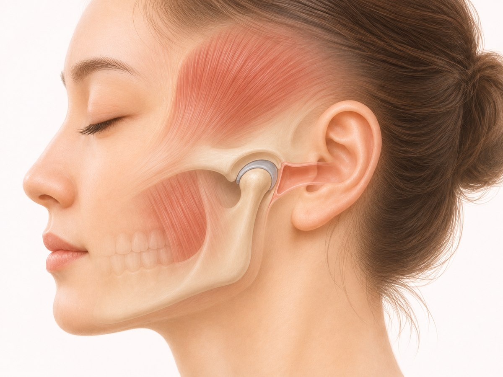
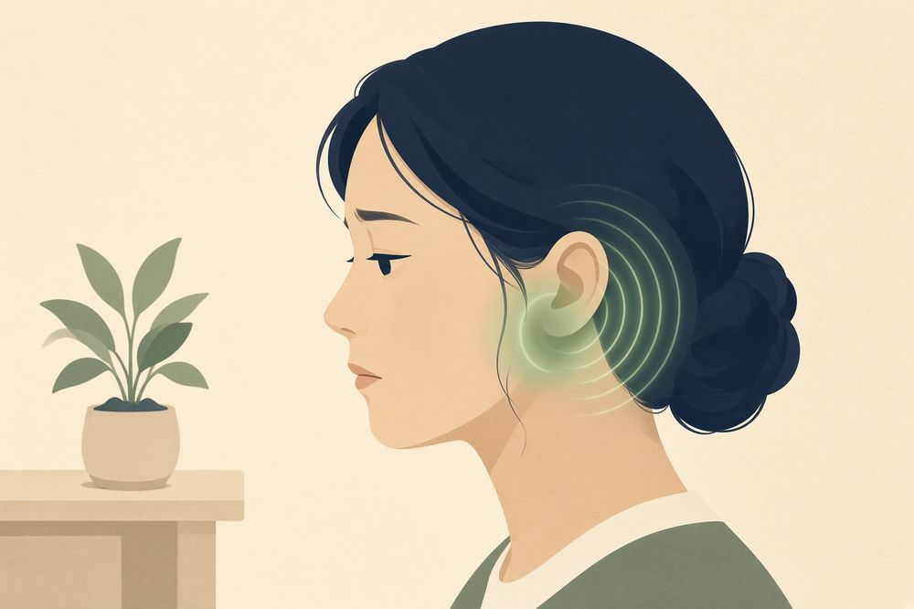

MEAW
MEAW
ANATOMY
턱관절과 귀는 벽 하나 사이입니다
턱관절은 귀 바로 앞에 있어, 얇은 벽 하나를 사이에 두고 맞닿아 있습니다.
이렇게 가깝다 보니 관절과 씹는 근육의 문제가 귀 증상처럼 느껴질 수 있습니다. 귀 검사가 정상인 경우에도 나타납니다.

귀 바로 앞의 턱관절. 얇은 벽 하나를 사이에 두고 붙어 있습니다.
CLINICAL FEATURES
턱 관련 귀 증상의 양상
아래 증상이 턱 증상(관절음, 통증, 기상 시 뻣뻣함)과 함께 있으면 턱관절도 확인해 볼 필요가 큽니다.
- ✓비행기를 탄 것처럼 귀가 먹먹하다
- ✓웅웅, 삐— 하는 이명이 있다
- ✓귀 주변이나 귀 속이 아픈데 귀는 정상이라고 한다
- ✓씹거나 입을 벌릴 때 귀 쪽이 울린다
- ✓턱이 피곤한 날 귀 증상도 심해진다

귀 주변의 먹먹함과 울림. 턱의 피로와 함께 심해지는 경향이 특징입니다.
이런 경우는 이비인후과가 먼저입니다
갑자기 한쪽 귀가 안 들리거나, 어지럼이 함께 오거나, 귀에서 분비물이 나오거나 열이 날 때는 귀 자체의 질환부터 확인해야 합니다. 이비인후과 진료가 먼저입니다.
MECHANISM
귀 검사가 정상인 귀 증상의 기전
턱에서 귀로 이어지는 경로는 세 가지입니다.
PATH 01
맞닿아 있는 자리
관절에 염증이 생기거나 눌리는 힘이 커지면, 바로 뒤의 귀 주변이 불편하게 느껴집니다.
PATH 02
신경을 같이 쓰는 근육
씹는 근육과 귀 안의 작은 근육은 같은 신경이 맡고 있습니다. 턱 근육이 오래 긴장하면 귀가 먹먹해지기도 합니다.
PATH 03
번져서 느껴지는 통증
씹는 근육의 긴장은 그 자리가 아닌 다른 곳의 통증으로 느껴지기도 합니다. 귀가 아픈 것 같은데 이비인후과 검사는 정상인 경우가 흔한 예입니다.
이비인후과 검사가 정상일 때
귀에서 원인을 찾지 못했다면, 턱관절도 확인해 볼 필요가 있습니다.
턱 소리, 씹을 때 통증, 아침의 뻣뻣함이 함께 있는지가 구분 기준이 됩니다.